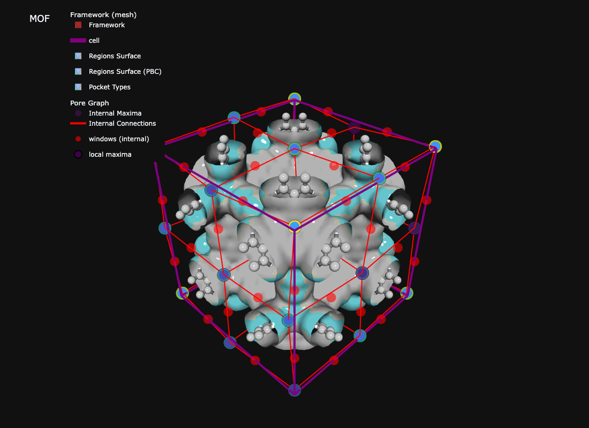

CIF to pore graph, pocket types, windows, and textural properties with two core calls
The full mofography pipeline: from a MOF crystal (a) through distance grid, watershed, PBC-aware segmentation, and pore graph construction (paper Figure 2)
Overview
Two functions do the heavy lifting. Everything else reads their output.
dgrid_from_atoms_rust(atoms, spacing) computes the distance grid (distance from each voxel to the nearest framework surface).
do_periodic_segmentation_rust(dgrid, atoms, ...) finds pockets, handles periodic boundaries, and detects windows. It returns one dictionary (seg).
From seg you get a pore graph, pocket types, windows, and textural properties (LCD, PLD, surface area, void volume). This page runs all of it on IRMOF-1. Parameter safe ranges live on Tuning and safe ranges.
Imports and structure
Show code
import numpy as npimport mofography as mgrfrom mofography.cif_io import read_cif_to_ase # fast Rust CIF reader, returns ase.Atoms (see the Fast Rust CIF reader page)atoms = read_cif_to_ase("IRMOF-1.cif") # or examples/TestCIFs/P1-IRMOF-1.cif from the repo root; ase.io.read works tooprint(f"{atoms.get_chemical_formula()}: {len(atoms)} atoms")print("Cell (Å):", atoms.cell.cellpar()[:3].round(2))
seg = mgr.do_periodic_segmentation_rust( dgrid, atoms, spacing=spacing, # always pass it; otherwise it is inferred mask_thickness=0.05, # Å, voxels closer than this to the framework are background h=0.2, # Å, maxima persistence min_distance=1.5, # Å, minimum separation between maxima threshold_abs=1.5, # Å, minimum height of a maximum watershed_backend="rust_det", compute_connections=True, # windows + connections return_dgrid=True, # keep dgrid inside seg for later steps disable_tqdm=True,)print(f"Pockets (PBC-merged): {len(seg['maxima_pbc'])}")print(f"Unique regions: {len(seg['unique_regions'])}")print(f"Window connections: {len(seg['connections'])}")print(f"PBC groups: {len(seg['pbc_groups'])}")
Those are the defaults (written out for clarity). seg also holds regions_pbc (labelled grid), maxima_info, all_maxima and input_params. See Region segmentation and PBC considerations.
Note
Messages starting with [pocket_maxima_check] mean a pocket’s recorded maximum is a bit lower than the true peak of its region (a few tenths of an Å). They are informational. See the tuning page if you want to remove them.
3. Pore graph
Pockets become nodes. Windows between pockets become edges.
seg = mgr.enrich_segmentation_with_pocket_psds(seg, atoms) # per-pocket PSDs, reused by typingtyped = mgr.assign_pocket_types(seg, atoms, method="env_cluster")print(f"{typed.n_types} types across {typed.n_pockets} pockets")for t in typed.type_summary:print(f" type {t['type_id']}: {t['n_pockets']} pockets, "f"max radius {t['max_r_min_a']:.2f}-{t['max_r_max_a']:.2f} Å")
Creating region-wise PSD plots...
Unique region labels found: [1 2 3 4 5 6 7 8]
Found 8 unique regions/pockets
Region 1: 1000 samples, mean pore size: 11.62 Å, std: 0.50 Å
Region 2: 1000 samples, mean pore size: 14.10 Å, std: 1.10 Å
Region 3: 1000 samples, mean pore size: 11.64 Å, std: 0.40 Å
Region 4: 1000 samples, mean pore size: 11.23 Å, std: 0.22 Å
Region 5: 1000 samples, mean pore size: 11.65 Å, std: 0.32 Å
Region 6: 1000 samples, mean pore size: 14.12 Å, std: 1.06 Å
Region 7: 1000 samples, mean pore size: 14.07 Å, std: 1.15 Å
Region 8: 1000 samples, mean pore size: 14.87 Å, std: 0.95 Å
2 types across 8 pockets
type 0: 4 pockets, max radius 5.63-5.85 Å
type 1: 4 pockets, max radius 7.18-7.54 Å
Each entry of seg["connections"] is [region_pair, flag, "internal"|"periodic", centre, radius]. Keep those that touch a unique region to avoid counting windows from the padding.
Show code
unique = seg["unique_regions"]windows = [c for c in seg["connections"] if np.any(np.isin(c[0], unique))]radii = np.array([float(np.ravel(c[4])[0]) for c in windows])print(f"{len(windows)} windows in the cell; radii {radii.min():.2f}-{radii.max():.2f} Å")
fig = mgr.show_mof_plotly(seg, atoms, typed_result=typed, framework_atoms=atoms, stylize=True)fig.write_image("tutorial_images/quick_start_structure.png", width=1100, height=800) # static preview for the docs
No node props provided, using default set: [position, scaled_position, element and atomic_number]
No edge properties provided. Use the default set: [bond_order, bond_type]
[TIMING batched_mesh_for_atoms] 472 atoms, 1024 bonds | spheres: 0.00s, cylinders: 0.00s, concat: 0.00s | total faces: 212480
No node props provided, using default set: [position, scaled_position, element and atomic_number]
No edge properties provided. Use the default set: [bond_order, bond_type]

IRMOF-1: framework, pore surface, pocket types, and windows
NoteInteractive version
fig = mgr.show_mof_plotly(seg, atoms, typed_result=typed, framework_atoms=atoms, stylize=True)fig.show() # rotatable Plotly figure in a notebook# or a standalone page:mgr.show_mof_threejs(seg, atoms, typed_result=typed, output_html="mof.html")